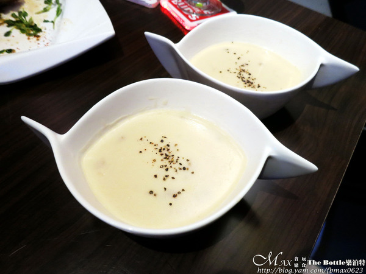

The Bottle(樂泊特)美式餐酒館」位在雲林斗六的建成路上。 這條路的餐廳不多，算是鬧中取靜的地方。 靠近斗六火車站及家樂福，結束還可以去逛逛斗六人文夜市。 店家營業時間從晚上才開始，可別白天就白跑來了XD
推開門後，右手邊是調酒的木質吧台。 幾位年輕貌美的男、女生在那調著酒飲，女生顏值頗高。 三個高腳座位，可以坐在這喝酒與調酒師聊天話家常。
店內的空間不大，可容納25-30人左右。 噴上的塗鴉牆，牆面擅用漫威英雄系列人物來擺飾。 燈光亮度適中，愈晚愈有氣氛，愈夜愈美麗。 店內所放送的音樂輕盈，能感受其舒適的用餐氛圍。
為了讓客人們更有歡樂的感覺。 現場有提供多款娛樂性的桌遊可以玩。 其中一款UNO，過年期間跟姪女們玩的不亦樂乎。
來看看The bottle的菜單，有義大利麵、燉飯、套餐、炸物、飲品和酒飲。 酒飲又分瓶裝啤酒、生啤酒、調酒和烈酒。 價格來說其實不貴，平日每人低消80元，假日150元。
點選套餐所附的玉米濃湯。 有玉米、火腿、磨菇和洋蔥，湯濃稠，磨菇香氣夠好喝。
白醬的奶油培根義大利麵，醬汁收的不錯。 甜椒、香菇、洋蔥及培根，香滑濃郁的奶油，與麵條配的剛剛好。
凡點套餐主食外，還有蜜烤紅蝦、義大利麵、炸物、濃湯和柳橙汁。 這樣一盤才299元，說真的不貴。

波浪薯條炸的金黃酥脆，酥香口感單吃的鹹度就有。 可以在佐點蜂蜜芥末醬加分不少。
天使紅蝦看樣子會以為烤的很乾，其實吃了後會改觀。 用叉子叉後蝦肉就能輕鬆挖出，蝦肉有蝦膏好誘人。 肉質Q彈嫩口，果然不賴。
迷迭香雞腿排有先幫忙剖半的動作。 灑上很多的香料，外皮烤的好酥好脆，是我喜歡的口感。 肉質鮮嫩紮實，不會太柴，帶有迷迭香獨特香氣迷人。 建議表層的香料別灑太多，因為會來的略鹹些。
將柳橙汁與石榴汁去做調合。 會呈現漸層的感覺，冰涼好喝。
這一盤義大利麵的配料相當豐盛。 光海鮮食材已將義大利麵覆蓋到看不到，哈哈！
海鮮有大蛤蜊、花枝、蝦子與小干貝。 食材都是店家去市場所採買的，一定都是新鮮。 蛤蜊肉肥美，花枝Q彈咬勁，小干貝彈牙，蝦子肉質鮮美。 表面灑了不少的起司粉，義大利麵一樣是白醬的。 麵條不爛保有彈度，白醬香濃，多了起司的鹹香，很好吃。
MENU上沒有，是貼在牆面上的，吸引我們目光。 烤半雞是現烤現做，所以需耐心等候。
烤半雞灑了香草及義大利香料粉。 半雞切開的瞬間，肉汁整個奔流出來，那畫面讓人口水直流。 雞皮軟嫩，雞肉緊實嫩口還不錯。 但切記要趁熱吃，放久容易乾掉會影響口感，推薦！
牛肋條使用鹽烤過，底下鋪上生洋蔥和甜椒點綴。 牛肋條帶筋有嚼勁，加上黑胡椒提味，配上酒飲很對味。 底下的洋蔥不辛嗆，還滿甜的，愈吃愈順口呢！ 對了，如果不吃鹽烤的朋友，也可以改成蜜汁的。
可別小看這雞翅，雞肉鮮嫩。 但每一口的辣味後勁強，很過癮。 嗜辣的朋友不可錯過...
一杯500cc，雖然1664在7-11也買的到。 但樂泊特的可是生啤酒，泡沫很細緻柔順。 帶有獨特的花果香氣，口感清新，沒有苦味，好喝無誤。
這二杯是女生朋友所點的調酒。 顏色很繽紛，看了心情很好。
又稱哈密瓜酒，綠色的調酒好可愛。 以哈密瓜酒、萊姆汁、君度酒和檸檬汁特調，再放上檸檬片。 哈密瓜的風味明顯，多了檸檬清爽不少。 酒精%數應該不低，這款調酒我們都很愛。
如果調酒沒有你想喝的，調酒師可以根據你的敘述或心情來杯客製化特調。 這杯是以朋友想要的來調，為草莓+氣泡飲+琴酒。 紅色很熱情，喝起來有種草莓汽水的滋味，女生會很喜歡。
餐後的水果是蓮霧和芭樂。
引自:http://blog.yam.com/fbmax0623/article/144818638